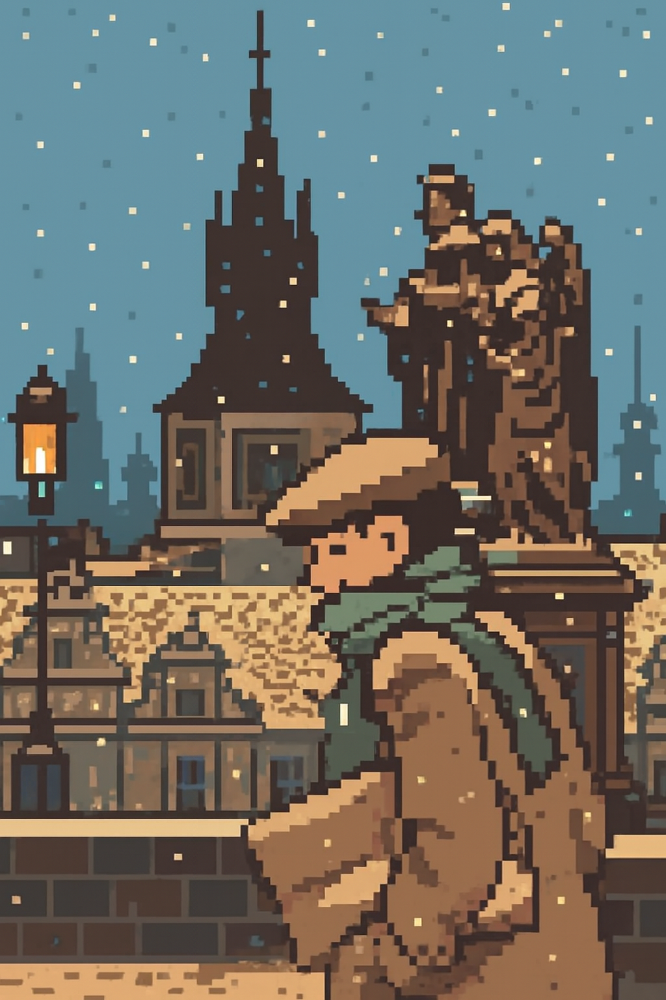

⸻ Une invitation à l’évasion ⸻
Comme le dirait si bien Mulder dans la série X-Files : « La vérité se trouve peut-être ailleurs… »
Une vérité qui échappe incroyablement bien au journal Le Scribouill'art ; sur ce site, vous ne trouverez que des articles romancés, inspirés du monde d’aujourd’hui et d’hier.
Comme Louis Pauwels et Jacques Bergier les diffusèrent dans leur revue Planète, je vous propose différentes rubriques offrant une lecture alternative du réel.
Chacune vous attendent derrière ces quelques frontières :
• L'ésotérisme, le territoire qui se dissimule au-delà des limites de la science.
• Le paranormal, flirtant par moments avec la science-fiction.
• Le fantastique, car la magie prend bien des formes, et nous emmène très loin dans notre imaginaire.
C’est par ici que les amateurs d’histoires à dormir debout trouveront leur place. Au Scribouill'art, on ne vous juge pas, on s'évade le temps d'un instant.
Sur ces quelques mots, je vous souhaite une agréable lecture, et je vous dis à bientôt pour de nouvelles parutions !
N.B. : Les articles que je vous présente ici sont inscrits dans une trame principale.
Drelall